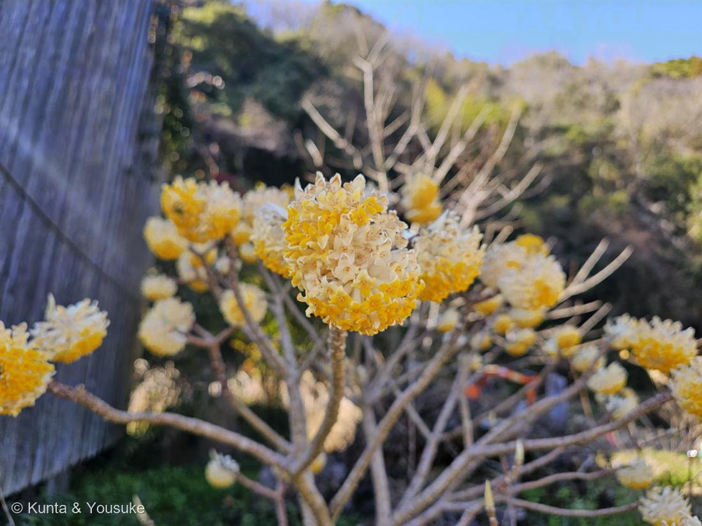
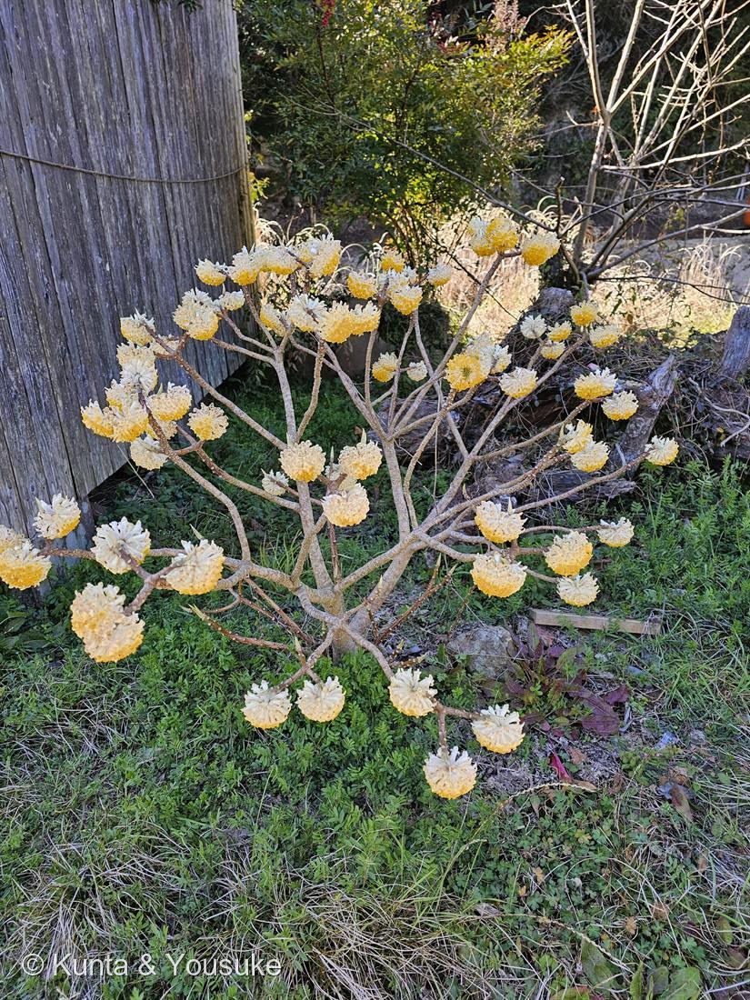

地図を読み込んでいるよ…
🔍 写真も地図も、押しているあいだ拡大して見られるよ（スマホは指を置いてすこし待ってね）。
🌍 の地図＝この子がもともと自生している場所を緑に。中国中南部〜ヒマラヤ。日本には古く渡来（室町期ごろとされる）。
日本には室町のころに渡ってきた子だから、日本は塗っていない。
⚠ 地図は国（日本と中国だけ県・省）までしか塗れないから、ほんとうの分布より広く見えていることがあるよ。地図はだいたいの場所。正確なところは、上の文を見てね。
ミツマタ（三椏）
Edgeworthia chrysantha Lindl.
別名 · カミノキ（紙の木）／英名 paperbush
ジンチョウゲ科 · Thymelaeaceae（ミツマタ属）
燻太さんの出題「めっきり見なくなった、でも大事な植物」……みんな毎日さわっているのに、誰もその姿を知らない植物。
名前と学名の由来 ── 枝が、必ず3つに分かれる
- 和名 三椏（みつまた）＝枝が必ず3本に分かれるから。写真②を見て。幹が3つに割れて、その先がまた3つに割れて、さらに3つ——ずっと3の倍数で増えていく。
- これは偶然ではなく、この木を一目で見分ける鍵。
- Edgeworthia（エッジワーシア）＝アイルランドの植物学者・東インド会社のマイケル・エッジワースにちなむ。
→ 003（Grewia）・027（Brunfelsia）・028（Tradescantia）・029（Justicia）に続く、人名をもらった属名の5人目。 - chrysantha（クリサンタ）＝ギリシャ語で「黄金の花」。写真のとおり。
- 別名 カミノキ（紙の木）。名前がもう、用途そのもの。
答え ── これは、日本のお札の原料
- ミツマタ（三椏）は、日本銀行券（紙幣）の主原料。明治12年（1879年）から使われている。原料になるのは靭皮繊維（じんぴせんい）＝樹皮の内側の繊維。
- なぜミツマタなのか：
・繊維が細く、長さがそろっている→紙が緻密でなめらかになり、偽造防止の細かい印刷に耐える。
・強靭でしなやか。折っても破れにくい。
・独特の光沢と手ざわり——あの、お札の「パリッ」とした感じ。 - 紙幣はミツマタ＋マニラ麻（アバカ）などを配合して作られる。
- みんな毎日さわっているのに、その植物を、ほとんどの人は見たこともない。
「めっきり見なくなった」の、ほんとうの意味
- 国内のミツマタ栽培は、激減している。
- かつては岡山・徳島・高知・愛媛など、山あいの村の大事な現金収入だった。
- いまは生産者の高齢化とシカの食害で、国内の産地がどんどん減った。
- 現在、日本の紙幣に使われるミツマタは、ネパールや中国からの輸入に大きく依存している。
- 日本のお札を支える植物が、日本ではほとんど作られなくなった。
花のこと ── そして「見た目と正体がちがう」
- 葉が出る前の早春（2月下旬〜4月）、葉のない枝先に、下向きの球形の頭花をつける。小さな筒状の花が数十個あつまった頭状花序。
- 外側は白い絹のような毛におおわれ、内側は黄色。写真①で、外の白い毛と内の黄色い花が同時に見える。
- ⚠この「花びら」に見えるもの、じつは花びらではない。ジンチョウゲ科には、花弁がない。花びらのように見える筒は、萼（がく）が筒状にくっついて色づいたもの。
→ 「見た目と正体がちがう」連作の9人目（003萼／008仮葉／014萼／016刺＝葉／025総苞／029苞／030皮刺・偽果／035「種」＝果実）。 - 甘い香りがある（ジンチョウゲの仲間なので）。
- ⚠有毒。そして樹皮は非常に強靭で、手では引きちぎれない——それが、そのまま「破れにくい紙」になる理由。
和紙の三大原料
- コウゾ（楮）（クワ科）＝繊維が長く強い。丈夫な和紙（障子紙・和傘）。
- ミツマタ（三椏）（ジンチョウゲ科）＝繊維が細くそろう。緻密でなめらかな紙（紙幣・証券）。
- ガンピ（雁皮）（ジンチョウゲ科）＝ミツマタの親戚。光沢が美しいが栽培が難しく、野生を採る。
- → おまけは「コウゾ」にした。三大原料の、いちばん身近な仲間。夏に赤い実をつける。探しに行こう。